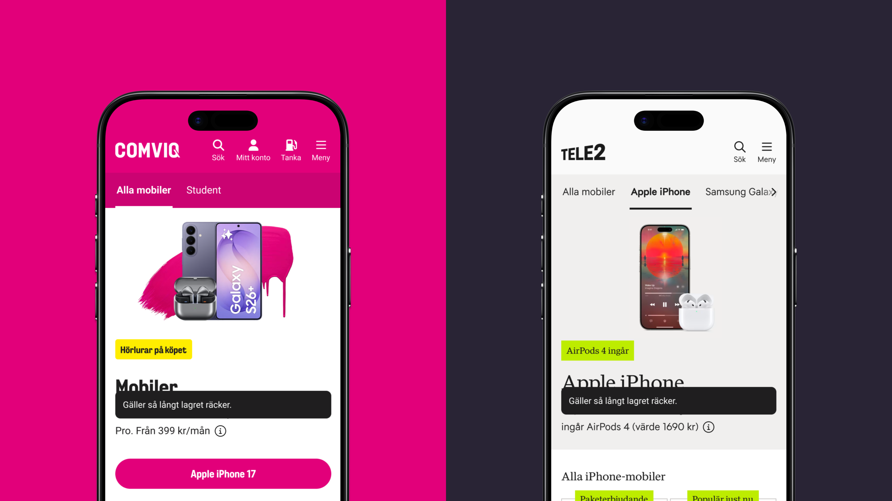
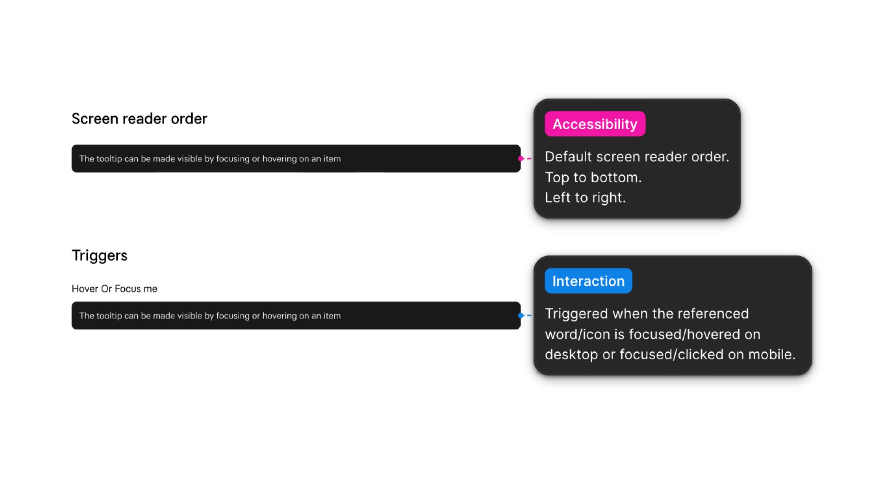
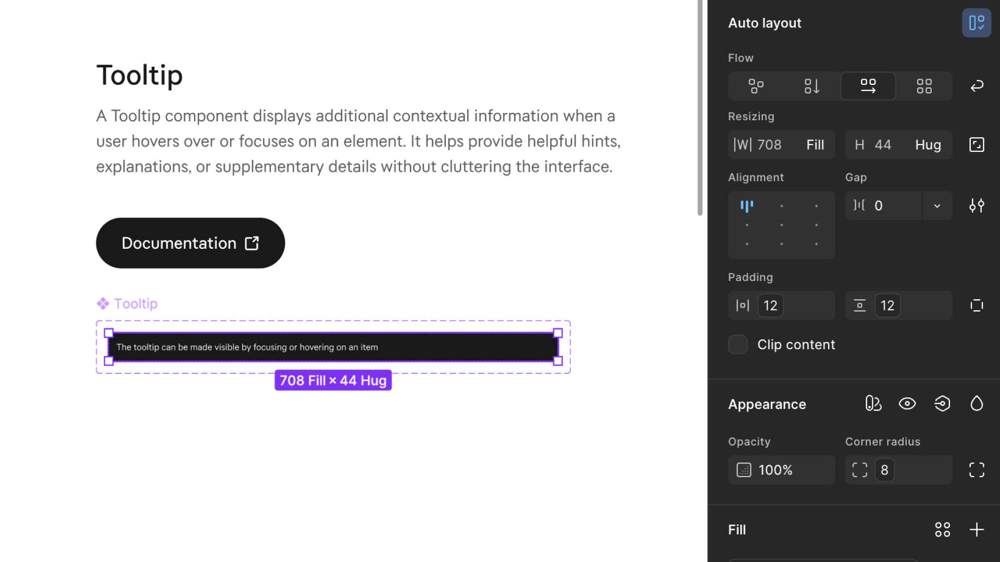
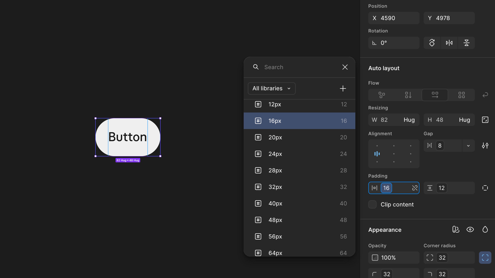
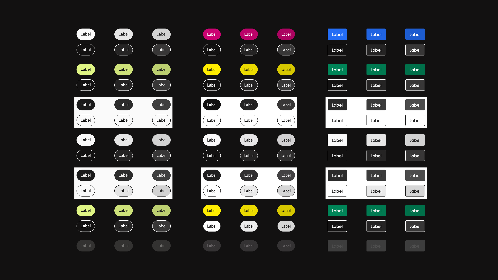
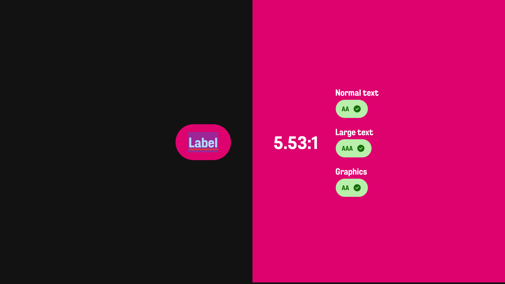

At Tele2, I worked with a white label design system — a shared component library that multiple brands within Tele2 can build on top of, each applying their own visual identity. Getting familiar with this approach and how it works in practice was a key part of my contribution.
Tele2 Design system

A tooltip shows contextual information when a user hovers over or focuses on an element, helping users understand functionality without cluttering the interface. I was tasked with building the component from scratch in Figma, documenting usage guidelines, and ensuring it met accessibility requirements.
The component was built following the white label structure, meaning it could easily be translated across Tele2's different brands and themes through the token system. It was added directly to the active design system, ready to be used across products.

Documentation covered both usage guidelines and accessibility compliance — including sufficient contrast ratios and screen reader order — ensuring it could be handed off and implemented consistently without ambiguity.

Tele2 Design system
Tele2 updated their sizing scale to a more universal token system. Rather than component-specific scale values, the new system introduced universal values shared across components. I was tasked with replacing all old scale values across every component — around 60 in total — before the old structure was phased out.
I updated all components and ensured they were correctly mapped to the new token system. Beyond future-proofing the system, the new scale is more intuitive to work with — clearer naming makes it easier to pick the right value with fewer exceptions. Working through each component manually gave me a deeper understanding of how tokens are structured and how they connect across a design system.

Tele2 Design system
The button component needed an update — requests had come in from multiple directions. More flexible variants were needed across all brands and themes, and the button states such as hover and pressed had to be reworked to meet accessibility requirements.
I documented the button component in Figma across all brands, themes, states, and styles. I checked each variant against WCAG 2.1 contrast requirements and adjusted token values where contrast fell short. I also added new color tokens for the missing states. Once complete, the updated component was added directly to the active design system, ready to be used across products.


Working hands-on with the design system gave me a solid understanding of how tokens function in practice — as the foundation that makes a white label multi-brand system possible, enabling consistency across brands while still allowing flexibility.
The work also highlighted how a shared component library with defined tokens makes accessibility scalable — when it's built in at the token level, it flows through every product automatically rather than being solved case by case.
Finally, it reinforced how important it is to plan the token structure thoroughly from the start — decisions made early have a significant impact on scalability down the line.